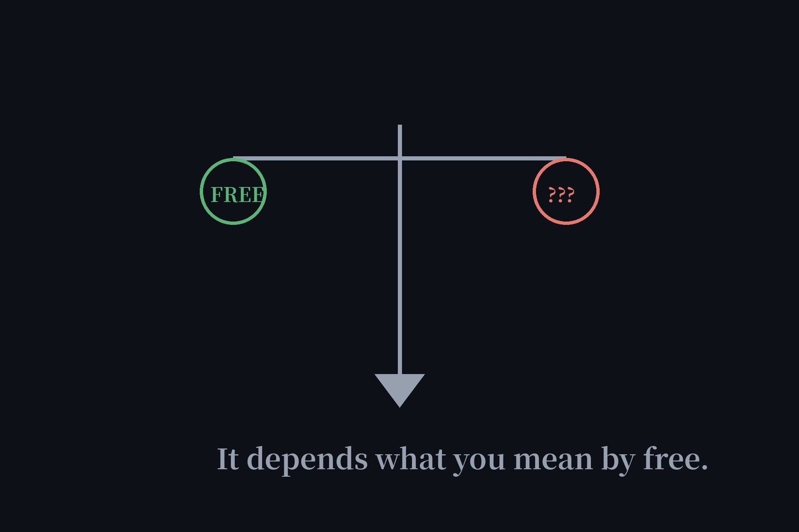

Is There a Completely Free AI Agent? The Honest Answer (2026)
Google's own "related questions" box asks it straight: is there a completely free AI agent available? After six verification articles in one week, here's the honest answer: yes — but "free" means four different things, and every vendor hopes you won't ask which one they mean. This is the complete map.

The four meanings of "free"
| You mean… | Example | The catch | Verified in |
|---|---|---|---|
| No sign-up | Duck.ai + 10 more | Usage caps, fewer models | Directory |
| No API key either | Open-source + Ollama local | Needs your own hardware | No-key test |
| Free tier (account ok) | Botpress, Copilot free | Account + limits | Builder test, coding roundup |
| Free trial | Lindy $50/7 days | Expires by design | Builder test |
Meaning 1: no sign-up — our home turf
Eleven agents in our directory, every one opened in a private window and used with zero account. Duck.ai leads — anonymous chat with identity stripping — followed by Andi for search-style answers and Raphael for unlimited image generation. The catch is honest and small: usage caps and fewer model choices than paid tiers. Nothing here demands your email, and we re-test on schedule to keep it that way.
Meaning 2: no API key either — the local route
The strictest definition: no account, no key, no cloud, no one else's server. The only way there is open-source software plus local models via Ollama — your machine, your GPU, your rules. We mapped this route in our no-API-key test. Everything else that claims "no key" is proxying through someone's backend, which means accounts, credits, or ads are hiding somewhere in the terms.
Meaning 3: free tier with an account — the mainstream deal
Most of what the internet calls "free" lives here: Botpress gives you 100 conversations a month, GitHub Copilot has a real free tier, 1minAI bundles tools behind a free login. The price is an account and the limits that come with it. Perfectly legitimate — just don't confuse it with meaning 1 or 2, which is exactly what the vendors want.
Meaning 4: free trial — the expiring kind
Lindy's $50 in credits (gone in 7 days), Voiceflow's one-time non-renewing credits, Versatl's $5 "when you sign up" — trials are marketing, not generosity, and they expire by design. Our wall-of-shame test exists because trial language keeps dressing up as "free." If it needs a countdown timer, it's not free — it's a demo with a clock.
So: is there a completely free AI agent?
Yes — pick your meaning and there's a verified answer for each. What doesn't exist is all four meanings at once with no trade-off: anonymous, keyless, unlimited, and permanent is a physical impossibility, because inference costs real money and someone always pays. Anyone selling you that combination is selling you meaning 4 in a trench coat. Now you have the map; the vendors can't move the labels anymore.
FAQ
Is there a completely free AI agent available?
Yes. If you mean no sign-up, our directory lists 11 verified agents including Duck.ai. If you mean no API key either, run an open-source agent with local Ollama models. If you mean a free tier with an account, Botpress and GitHub Copilot both have real free plans.
Is there a free trial for AI agents?
Many builders offer trials — Lindy gives $50 in credits for 7 days, Voiceflow offers a no-card trial — but trials expire by design. For something that doesn't expire, use a no-signup agent from our directory or a local open-source setup.
Is there a totally free AI companion app?
Truly free companion apps are rare because conversation is expensive to serve. Character.AI, the biggest name, requires sign-up with no anonymous mode. For anonymous AI chat, Duck.ai is the verified alternative.
Is there a free API for AI agents?
Yes — our free APIs page lists APIs with no-credit-card tiers, including options that pair with open-source agents like Cline and OpenCode for a near-free coding setup.